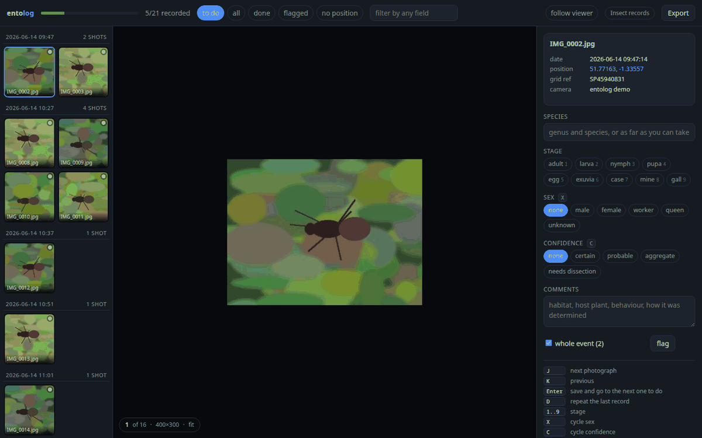
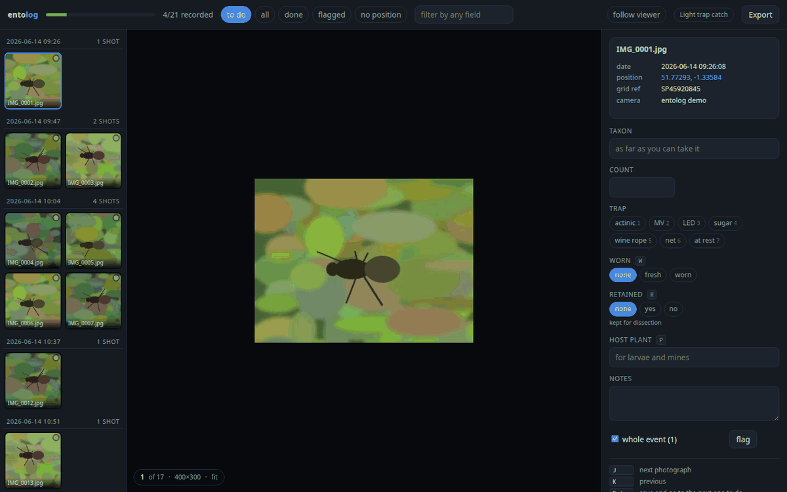
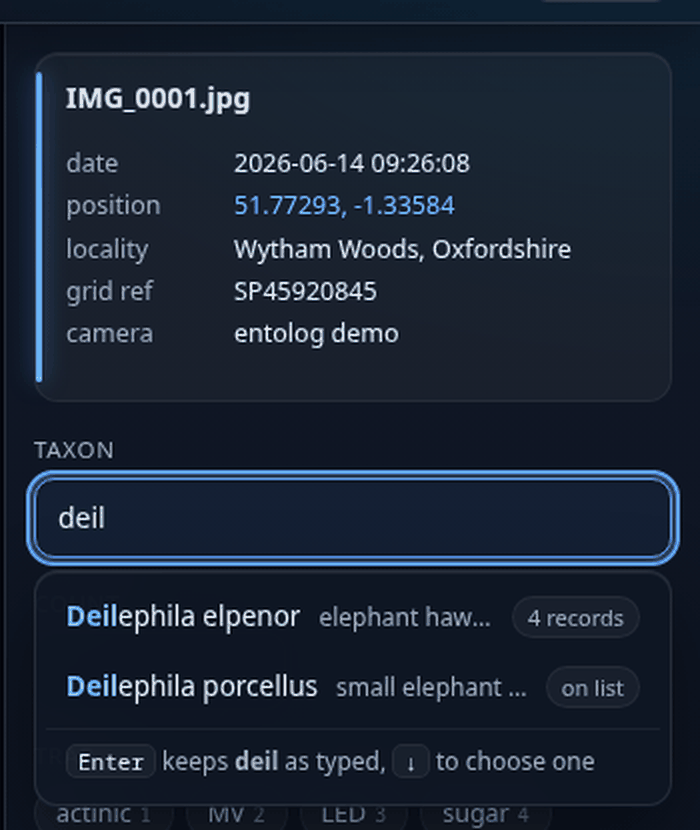

Turn a folder of photographs into a species record table, with the fields you decide on.
From the window, the terminal, or the image viewer you already use. Everything stays on your machine.
MIT licensed · no dependencies · 286 tests · Python 3.9 or newer · nothing is uploaded

A day in the field produces a card full of photographs. Somewhere between that card and a recording scheme, somebody has to turn pictures into rows: name, date, place, stage, sex, notes. That typing is most of the work, and it is why cards sit undone for a season.
Nearly every tool in this space starts after that step, from a spreadsheet you have already filled in, or a web form you type into one record at a time. entolog is the step itself. The photograph already knows when and where. You know what.
filename date time latitude longitude locality species stage sex comments IMG_0421.jpg 2026-06-14 09:26:07 51.753792 -1.257281 Wytham Woods, Oxfordshire Vespa crabro adult female on ivy, sunny bank
No camera card, nothing to install, nothing uploaded. This writes 21 demo photographs with real EXIF, reads them, and opens the window.
$ python3 entolog.pyz demo 21 demo photographs in entolog-demo scanned into entolog-demo/entolog.db, two specimen events already recorded, 24 names loaded Try any of these: entolog annotate the window entolog enter the terminal entolog edit the table in $EDITOR entolog check the record cleaning pass entolog export -f dwca -o records.zip
A profile is a JSON file listing what a record contains. The storage, the form, the terminal grammar, the keyboard shortcuts, the autocomplete, the validation, the export columns and the Darwin Core terms are all generated from it. There is no field list anywhere in the code.

{
"name": "moths",
"primary": "taxon",
"fields": [
{"name": "taxon", "type": "text", "learn": true,
"dwc": "scientificName"},
{"name": "count", "type": "number", "min": 1,
"dwc": "individualCount"},
{"name": "trap", "type": "choice", "digits": true,
"open": false,
"choices": ["actinic", "MV", "LED", "sugar", "net"]},
{"name": "retained", "type": "bool", "key": "r"},
{"name": "host_plant", "type": "text", "learn": true,
"key": "p", "dwc": "associatedTaxa"}
]
}
Built in: insects, moths, wildlife, birds, plants. Start from the closest and edit it. A scheme can hand its recorders a profile with exactly the fields it wants back.
Same profile, same validation, same storage, same exports. Use whichever suits the hour, and keep using your own image viewer alongside any of them.
Photograph, form, keyboard shortcuts, saved as you type. Zoom that holds the point under the pointer and says what percentage of the photograph's own pixels you are looking at.
entolog ~/photos/june
One line per specimen. Abbreviations resolve only when they can mean one thing. Tab completes.
> Vespa crabro / adult / f / on ivy saved 3 photographs
feh, nsxiv, geeqie, anything that runs a command. entolog follows what you are looking at.
entolog current %f entolog record - "vecr / adult"
The whole table in $EDITOR. Columns matched by name, so reorder or delete them freely.
entolog edit
Any field that learns offers what you have already recorded and whatever checklist you loaded, ranked so the names you actually use come first. A common name finds the scientific one. Nothing you type is ever replaced unless you pick a suggestion, and the list says so while you type.

entolog checks all three against something better than memory, and never rewrites what you typed.
Bring the taxon list you are entitled to use. Names then carry its identifier, a Taxon Version Key or whatever the list holds, into every export. A synonym is offered as one and reported, never replaced.
entolog taxa import uksi.csv
Where the camera saved a GPS fix it saved the satellite time too. Which part of the difference is a time zone is not in the file, so both readings are offered rather than one guessed.
the camera reads +1h47m against UTC in a +1h zone the clock is 47m fast in a +2h zone the clock is 13m slow
British and Irish grids, chosen by where the photograph was taken. Any record can be published as the square it falls in, which matters for a rare species and for a photograph taken in your own garden.
entolog set blur 1km
The pass a scheme's verifier would do, run on your own machine while the photographs are still in front of you.
$ entolog check
! 3 records have no position
Add a grid reference by hand, or use the 'no position' filter
IMG_0455.jpg, IMG_0456.jpg, IMG_0461.jpg
! 8 records are dated before 1995, which no digital camera was
The camera clock was reset, usually by a flat battery
? species written 2 ways: 'Vespa crabro', 'Vespa crabro'
Only spacing or capitals differ, so these are one name
? 2 records have a species that is not in your checklist: 'Vespa velutina'
- 4 photographs still flagged
entolog export -f dwca -o records.zip entolog export -f irecord -o for-irecord.csv entolog export -f tsv -o records.tsv
dwca is a real
Darwin Core Archive: occurrence.csv, a meta.xml describing every column
as a Darwin Core term, and an eml.xml carrying the recorder and the
licence. It is what GBIF, an IPT and the NBN Atlas ingest.
urn:entolog: plus a dataset
identifier and a fingerprint of the photograph, so the same record
reaching an aggregator twice is still one record.It does not identify anything: there is no image recognition and no suggested names. It does not check names against a taxonomy. It does not store or publish records anywhere, and has no account and no server. It is not a photo manager, and never writes to your images. It sits upstream of iRecord and the atlases, not in place of them.